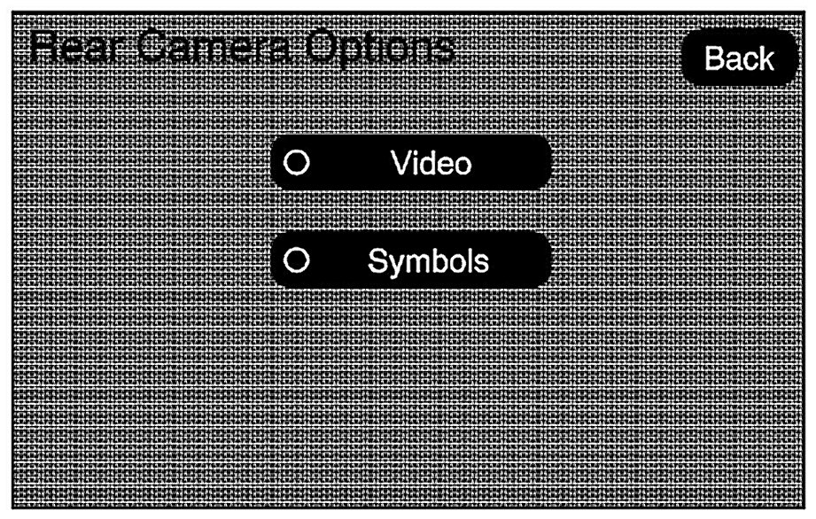

Rear Vision Camera System - Operating Characteristics
Bulletin No.: 06-08-127-001Date: August 21, 2006
INFORMATION
Subject:
Information on Normal Operating Characteristics and Diagnosis of Rear Vision Camera Systems (RPO UVC - Rearview Camera)
Models:
2007 Cadillac Escalade, Escalade ESV, Escalade EXT
2007 Chevrolet Avalanche, Suburban, Tahoe
2007 GMC Yukon, Yukon XL, Yukon Denali, Yukon Denali XL
with Rearview Camera (RPO UVC)
The purpose of this bulletin is to inform dealers of normal operating characteristics of rear vision camera systems (RPO UVC) and provide information for diagnosis of rear vision camera system concerns.
If a customer comments on an inoperative rear vision camera system, dealer service personnel should take the following steps:
Verify the customer concern. Please note that the rear vision camera will only display video on the navigation screen when the vehicle is in Reverse (R) gear. Inform the customer of normal characteristics of the rear vision camera system, if necessary.
Make sure that the rear vision camera is activated. Refer to Turning the Rear Vision Camera System On or Off in the Owner's Manual Supplement - Navigation System in SI. (This procedure is also provided below for your convenience.)
If the rear vision camera is activated and returns an error message, please refer to the diagnosis information provided in this bulletin. Refer to the Rear Vision Camera Error Message and Diagnosis Information section of this bulletin.
Search SI for any bulletins or preliminary information regarding new issues or new calibrations for the rear vision camera system or navigation system.
Normal Characteristics of the Rear Vision Camera System
The customer should be informed of normal operating characteristics of the rear vision camera system. The following information is provided in the Owner's Manual Supplement - Navigation System.
Rear Vision Camera
Your vehicle may be equipped with a rear vision camera system. Read this entire section before using the camera system.
The rear vision camera system is designed to help the driver when backing up by displaying a view, on the navigation screen, of the area behind the vehicle when the driver shifts the vehicle into REVERSE (R). Once the driver shifts out of REVERSE (R), the navigation screen will go back to the last screen that had been displayed, after a delay.
When the System Does Not Seem To Work Properly
The rear vision camera system may not work properly or display a clear image in the following situations:
In the dark.
When the sun or the beam of headlights is shining directly into the camera lens.
If ice, snow, mud, or anything else builds up on the camera lens. Clean the lens, rinse it with water, and wipe it with a soft cloth.
If the back of the vehicle is in an accident, the position and mounting angle of the camera may change or the camera may be affected. Be sure to have the camera and its position and mounting angle checked at your dealer/retailer.
Extreme high or low temperatures or extreme temperature changes can affect the image displayed.
There may be a 10-12 second delay at initial start-up before the rear vision camera image will be displayed on the navigation screen.
It may also be helpful for dealership service personnel to instruct the customer on the proper procedure to activate the rear vision camera system. Please refer to Turning the Rear Vision Camera System On or Off in the Owner's Manual Supplement - Navigation System in SI, also provided in the next section for your convenience.
Turning the Rear Vision Camera System On or Off
To turn the rear vision camera system on or off, do the following steps:
Shift into PARK (P).
Press the CONFIG hard key to enter the configure menu options and then press the CONFIG hard key to select Display or touch the Display screen button.
Select the Rear Camera Options screen button. The Rear Camera Options screen will display.

Select the Video screen button. The screen button will be highlighted when on.
Rear Vision Camera Error Message and Diagnosis Information
If the camera is activated, the following error messages may appear:
Rear Vision Camera System Unavailable: This message may display when the system is not receiving information from the transmission control module (TCM).
Ensure that the TCM is functioning/communicating properly. Do not replace the camera or the camera ECU. Service Rear Vision Camera System: This message may display when the system is not receiving video from the camera.
If "Rear Vision Camera System Unavailable" message appears:
The rear vision camera ECU module is located under the front passenger seat. Examine the connections and check for bent or backed out pins in the rear vision camera connector. Make sure that the connector is securely plugged into the ECU module and that the ECU has proper power and ground connections. Also inspect connector C209, which is located on the right side of the instrument panel.
Inspect the wiring harness around the rear vision camera ECU. There may be a small loop in the wiring harness. Make sure that this loop is not in contact with or caught in the passenger seat track.
On Chevrolet Avalanche and Cadillac Escalade EXT, inspect the connector at the tailgate.
If "Service Rear Vision Camera System" message appears:
Please inspect the following areas:
There are two interconnections between the rear camera assembly and the ECU module.
Inspect the interconnects between the ECU module and the rear applique'. This interconnect is located in the rear tail gate or liftgate.
Inspect the interconnects on the applique' where the camera is mounted.
Inspect the connections at the rear vision camera ECU module (located under the front passenger seat). Inspect the connector for bent or backed out pins and make sure that the connector is securely plugged into the ECU module and that the ECU has proper power and ground connections.
Inspect the camera lens to make sure that the lens is clean.
On some Cadillac Escalade, Escalade ESV or Escalade EXT vehicles with the SuperNav radio (RPO U3R), a "Service Rear Vision Camera System" message may appear while the rear vision camera system is functioning normally. This may occur when shifting from park to reverse or reverse to drive quickly. If the rear vision camera system is functioning normally, this issue may be resolved by reprogramming the SuperNav navigation radio with new software from TIS 6.0 or later. After programming, verify the HVAC and RCDLR functions. If the HVAC and/or RCDLR do not function, cycle power to the modules - do NOT replace the modules.
Searching Service Information (SI) for New Information
Dealer service personnel should search SI for bulletins and preliminary information regarding new issues and/or new calibrations for the rear vision camera system and/or navigation system.
Please be aware the some software updates for the navigation system will be provided on DVD, rather than using SPS programming through CD, satellite broadcast, or TIS2Web, so it is very important to search for bulletins or PIs to learn about these new releases.
Service Manual information (diagnostic and repair procedures) is also updated frequently in SI.

Disclaimer